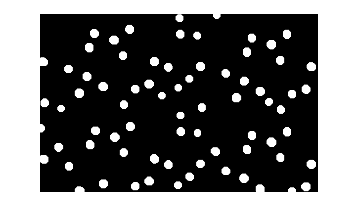
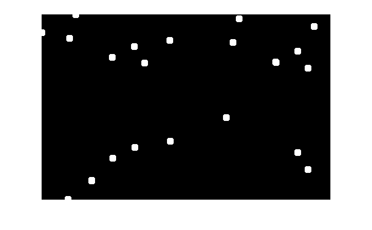
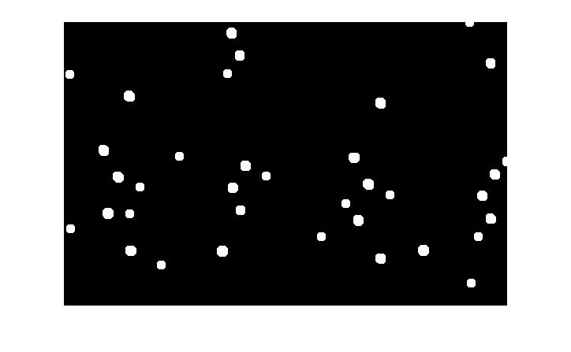
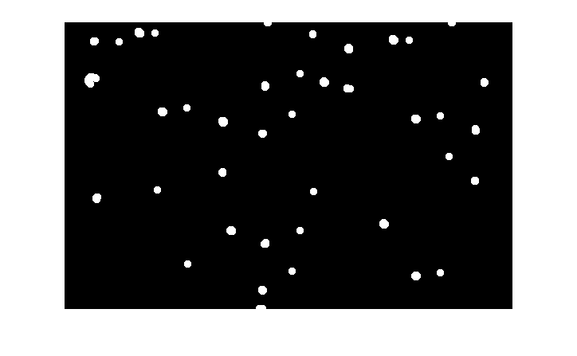
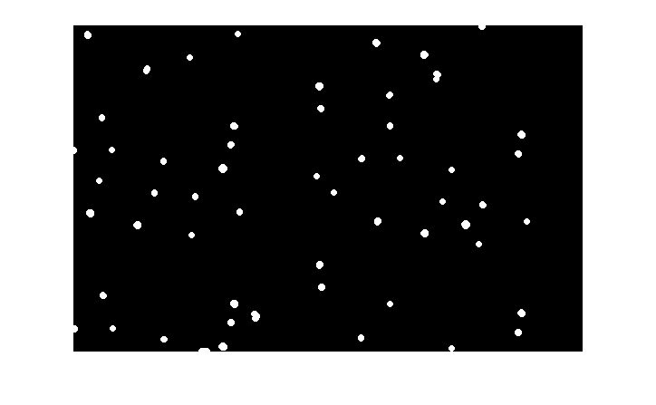
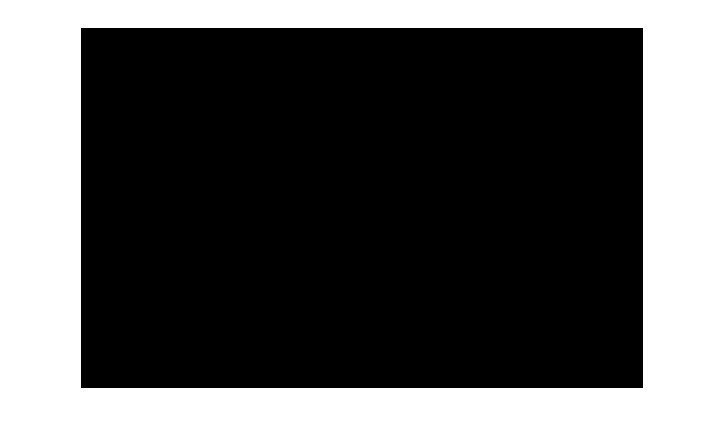

Contents
close all;
clc;
clear all;
Connnectd components
myimg=imread('circles.jpg');
img=myimg;
img=rgb2gray(img);
img=im2bw(img , 0.4);
For maximum sized circles
img1=img;
se=strel('disk',8);
out1=imopen(img1,se);
figure();
imshow(out1);
ans1=connected(img1)
L = bwlabel(img1,4);
max(max(L))
ans1 =
407
ans =
406

For circles with 7<radius<8
img2=img;
se=strel('disk',7);
img2=imopen(img2,se);
out2=img2-out1;
se=strel('disk',7);
out2=imopen(out2,se);
figure();
imshow(out2);
ans2=connected(out2)
L = bwlabel(out2,4);
max(max(L))
ans2 =
144
ans =
144

For circles with 6<radius<7
img3=img;
se=strel('disk',6);
img3=imopen(img3,se);
out3=img3-out1;
out3=imopen(out3,se);
out3=out3-out2;
out3=imopen(out3,se);
figure();
imshow(out3);
ans3=connected(out3)
L = bwlabel(out3,4);
max(max(L))
ans3 =
36
ans =
36

For circles with 5<radius<6
img4=img;
se=strel('disk',5);
img4=imopen(img4,se);
out4=img4-out3;
out4=out4-out2;
out4=out4-out1;
out4=imopen(out4,se);
figure();
imshow(out4);
ans4=connected(out4)
L = bwlabel(out4,4);
max(max(L))
ans4 =
40
ans =
40

For circles with 4<radius<5
img5=img;
se=strel('disk',4);
img5=imopen(img5,se);
out5=img5-out3;
out5=out5-out2;
out5=out5-out1;
out5=out5-out4;
out5=imopen(out5,se);
figure();
imshow(out5);
ans5=connected(out5)
L = bwlabel(out5,4);
max(max(L))
ans5 =
56
ans =
56

For circles with 3<radius<4
img6=img;
se=strel('disk',4);
img6=imopen(img6,se);
out6=img6-out3;
out6=out6-out2;
out6=out6-out1;
out6=out6-out4;
out6=out6-out5;
out6=imopen(out6,se);
figure();
imshow(out6);
ans6=connected(out6)
L = bwlabel(out6,4);
max(max(L))
ans6 =
0
ans =
0
